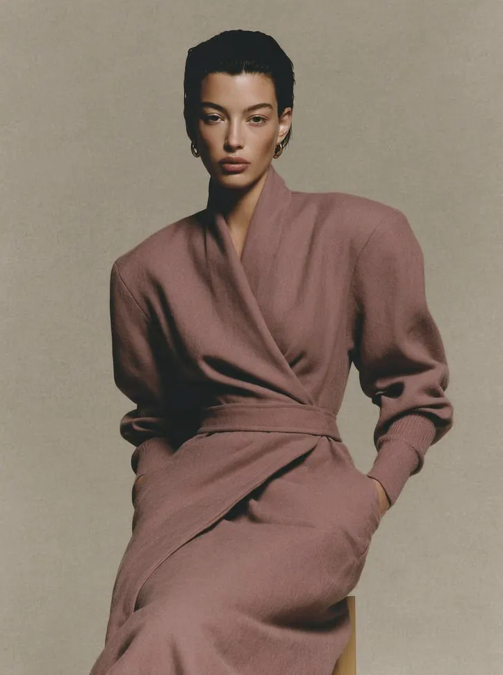
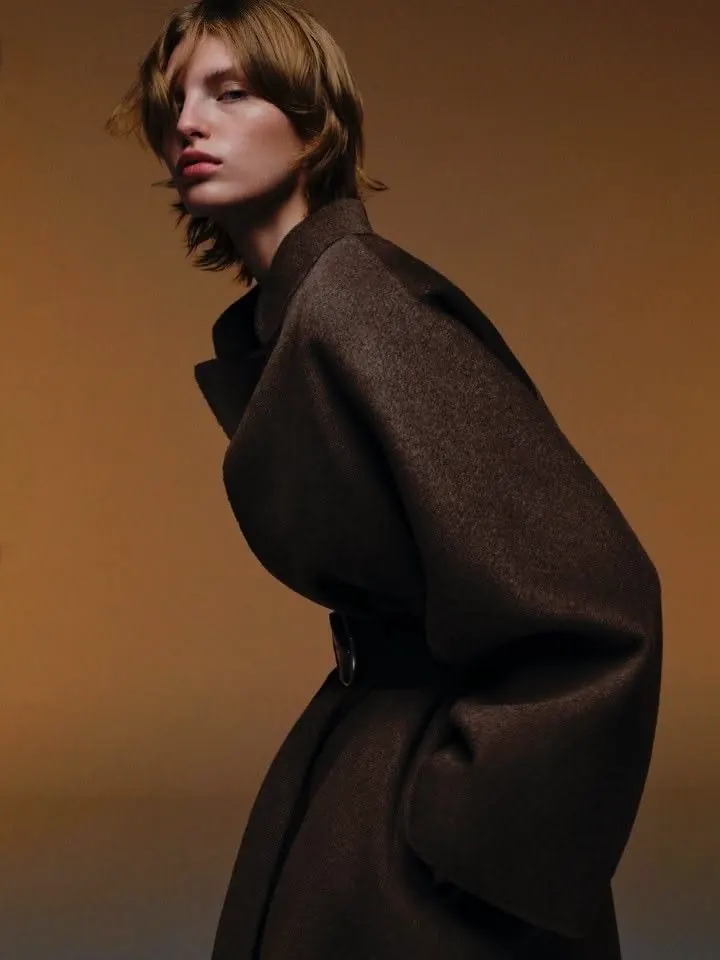

Made to Matter.
Quiet strength.Sculpted proportion.Tactile restraint.
The first ILĀ collection for women: eleven pieces across denim, tailoring, leather, knitwear and tops.
Fit support
Find the right size before you order
Size guide
Measurements in cm and inches. The chart is a dummy for now and will be replaced with ILĀ's pattern measurements.
Book a fitting
Ask to try a piece in person. Format and places are to be confirmed.
Ask on WhatsApp
Questions about fit, sizing or a piece. The number is to be confirmed.
The campaign
Two collections
 Maroon CollectionSee the Maroon Collection campaign in the journal
Maroon CollectionSee the Maroon Collection campaign in the journal
 Black CollectionSee the Black Collection campaign in the journal
Black CollectionSee the Black Collection campaign in the journal
Which pieces belong to which collection is to be confirmed by ILĀ. Campaign photographs are placeholders from the brand guide.
The first collection
Shop all


What ILĀ stands for
Presence. Proportion. Purpose.
Presence
Quiet strength.
Proportion
Sculpted proportion.
Purpose
Tactile restraint.
Made to Matter.
A small collection, shown plainly
Every piece is photographed front on, in soft light, with space around it. What we know about each piece is written on its page. What we have not confirmed yet is marked "To be confirmed".
